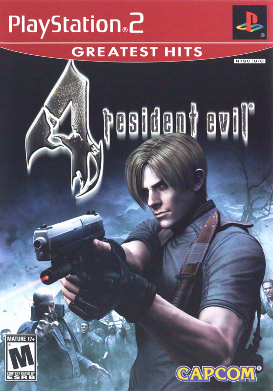

Resident Evil 4 é um jogo de survival horror de 2005 desenvolvido e publicado pela Capcom para o GameCube . Os jogadores controlam o agente especial Leon S. Kennedy em uma missão para resgatar a filha do presidente dos Estados Unidos, Ashley Graham , que foi sequestrada por um culto religioso na zona rural da Espanha . Leon luta contra hordas de inimigos infectados por um parasita que controla mentese se reencontra com a espiã e mercenária Ada Wong . Diferentemente dos ângulos de câmera fixos e da jogabilidade mais lenta dos jogos anteriores de Resident Evil , Resident Evil 4 apresenta um sistema de câmera dinâmico e uma jogabilidade voltada para ação e terror.
O desenvolvimento para PlayStation 2 começou em 1999. Quatro versões propostas foram descartadas. A primeira foi dirigida por Hideki Kamiya , mas o criador da série, Shinji Mikami , achou que era uma mudança muito drástica, então se tornou um novo jogo, Devil May Cry (2001). Outras versões foram descartadas até que Mikami assumiu a direção. Resident Evil 4 foi anunciado como parte do Capcom Five , uma colaboração entre a Capcom e a Nintendo para criar cinco jogos exclusivos para o GameCube.
Resident Evil 4 foi aclamado por sua jogabilidade, gráficos, história, personagens e dublagem, e ganhou diversos prêmios de Jogo do Ano . Foi adaptado para inúmeras plataformas e se tornou um sucesso multiplataforma , vendendo 15,2 milhões de cópias até março de 2025. Resident Evil 4 é amplamente citado como um dos melhores e mais influentes jogos de todos os tempos . Influenciou a evolução dos gêneros survival horror e de terceira pessoa, popularizando a perspectiva em terceira pessoa "sobre o ombro" usada em jogos como Gears of War , Dead Space e The Last of Us . Resident Evil 5 foi lançado em 2009 e um remake foi lançado em 2023.